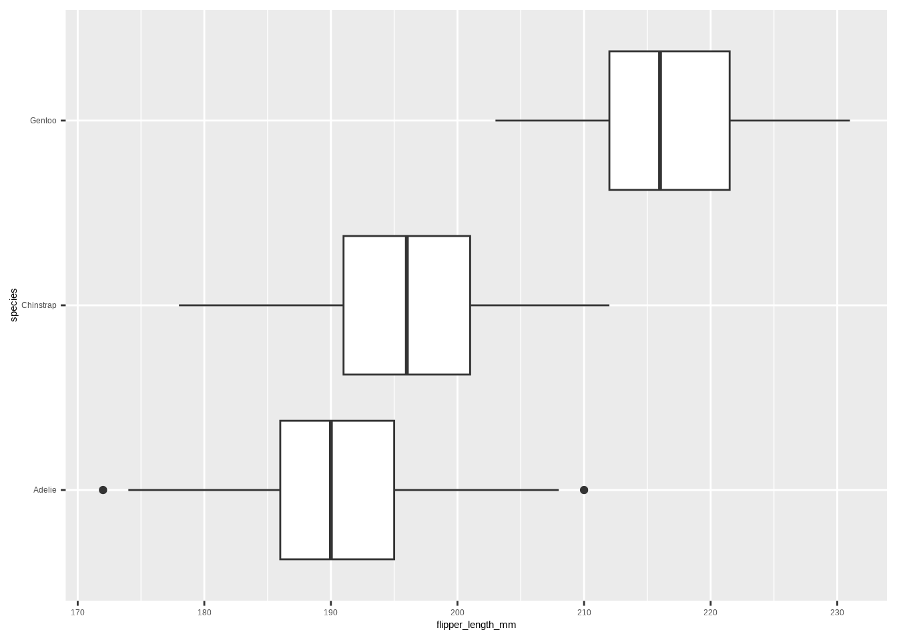

# One-variable view
ggplot(penguins, aes(body_mass_g)) +
geom_density()
Copy the following code and put it in a code cell in Google Colab. Only do this if you are using a completely new notebook.
# This code will load the R packages we will use
install.packages(c("csucistats", "taylor", "palmerpenguins"),
repos = c("https://inqs909.r-universe.dev",
"https://cloud.r-project.org"))
library(csucistats)
library(tidyverse)
library(taylor)
library(palmerpenguins)DATA → your data frame/tibble (e.g., penguins).Y → the outcome variable (e.g., body_mass_g).X, X1, X2, …, Xp → predictor variables (e.g., flipper_length_mm, species).factor(X) if needed).This is the process of trying to reduce unexplained variation in an outcome by using informative predictors — think getting it less wrong with an educated guess.
# One-variable view
ggplot(penguins, aes(body_mass_g)) +
geom_density()
# Same variable, grouped by a category (species)
ggplot(penguins, aes(body_mass_g, fill = species)) +
geom_density(alpha = .5)Generated data idea: \(Y \sim DGP_1\). A minimal model says everyone gets the same prediction:
\[Y = \beta_0 + \varepsilon.\]
# Density + later we'll add the mean as a vertical line
ggplot(penguins, aes(body_mass_g)) +
geom_density()
Fill in the blank: \(Y = \_\_\_ + error \Rightarrow Y = \beta_0 + \varepsilon\).
Simple generated model: \(Y \sim \beta_0 + \varepsilon,\ \varepsilon \sim DGP_2\) (a different distribution after centering).
Observed vs. estimated:
# Fit the null (intercept-only) model
m0 <- lm(body_mass_g ~ 1, data = penguins)
m0#>
#> Call:
#> lm(formula = body_mass_g ~ 1, data = penguins)
#>
#> Coefficients:
#> (Intercept)
#> 4207# Visualize the estimated mean
mu_hat <- b(m0, 0)
ggplot(penguins, aes(body_mass_g)) +
geom_density() +
geom_vline(xintercept = mu_hat, linetype = 2)
Residuals are the observed errors: \(r_i = Y_i - \hat Y_i\).
Template:
lm(Y ~ 1, data = DATA)# 1-D: distribution of Y
ggplot(penguins, aes(body_mass_g)) +
geom_density()# 2-D: density of (X, Y)
ggplot(penguins,
aes(x = flipper_length_mm, y = body_mass_g, fill = after_stat(level))) +
stat_density_2d(geom = "polygon")
\[ Y = \beta_0 + \beta_1 X + \varepsilon, \quad \hat Y = \hat\beta_0 + \hat\beta_1 X. \]
# Scatter plot
ggplot(penguins, aes(flipper_length_mm, body_mass_g)) +
geom_point()# Add a least-squares line
ggplot(penguins, aes(flipper_length_mm, body_mass_g)) +
geom_point() +
stat_smooth(method = "lm", se = FALSE)# Fit the model
m1 <- lm(body_mass_g ~ flipper_length_mm, data = penguins)
m1#>
#> Call:
#> lm(formula = body_mass_g ~ flipper_length_mm, data = penguins)
#>
#> Coefficients:
#> (Intercept) flipper_length_mm
#> -5872.09 50.15Interpretation:
Template:
lm(Y ~ X, data = DATA)When we use a categorical predictor in a regression, R needs to convert the categories into numbers. This is done using dummy variables (also called indicator variables).
1 if the observation belongs to that category0 otherwiseExample: Penguin species:
The species variable has 3 categories: Adelie, Chinstrap, Gentoo.
We create two dummy variables:
| Species | \(D_1\) (Chinstrap) | \(D_2\) (Gentoo) |
|---|---|---|
| Adelie | 0 | 0 |
| Chinstrap | 1 | 0 |
| Gentoo | 0 | 1 |
If we model penguin body mass (\(Y\)) with species:
\[ \hat Y_i = \beta_0 + \beta_1 D_{1i} + \beta_2 D_{2i} \]
Predictions:
- Adelie: \(\hat Y = \beta_0\)
- Chinstrap: \(\hat Y = \beta_0 + \beta_1\)
- Gentoo: \(\hat Y = \beta_0 + \beta_2\)
R automatically creates dummy variables when you use a factor in lm().
The first level of the factor is used as the reference group (by default).
# Fit model with species (factor) as predictor
m <- lm(body_mass_g ~ species, data = penguins)
summary(m)#>
#> Call:
#> lm(formula = body_mass_g ~ species, data = penguins)
#>
#> Residuals:
#> Min 1Q Median 3Q Max
#> -1142.44 -342.44 -33.09 307.56 1207.56
#>
#> Coefficients:
#> Estimate Std. Error t value Pr(>|t|)
#> (Intercept) 3706.16 38.14 97.184 <2e-16 ***
#> speciesChinstrap 26.92 67.65 0.398 0.691
#> speciesGentoo 1386.27 56.91 24.359 <2e-16 ***
#> ---
#> Signif. codes: 0 '***' 0.001 '**' 0.01 '*' 0.05 '.' 0.1 ' ' 1
#>
#> Residual standard error: 460.8 on 330 degrees of freedom
#> Multiple R-squared: 0.6745, Adjusted R-squared: 0.6725
#> F-statistic: 341.9 on 2 and 330 DF, p-value: < 2.2e-16Templates:
lm(Y ~ X, data = DATA) # if X is already a factor
lm(Y ~ factor(X), data = DATA) # force X to be treated as factorThe function num_by_cat_stats() quickly computes descriptive statistics of a numerical variable grouped by a categorical variable.
Template:
num_by_cat_stats(DATA, NUM, CAT)DATA: the data frame (e.g., penguins)NUM: the numerical variable you want to summarize (e.g., body_mass_g)CAT: the categorical variable that defines groups (e.g., species)Example:
num_by_cat_stats(penguins, body_mass_g, species)#> Categories min q25 mean median q75 max sd var iqr
#> 1 Adelie 2850 3362.5 3706.164 3700 4000 4775 458.620 210332.4 637.5
#> 2 Chinstrap 2700 3487.5 3733.088 3700 3950 4800 384.335 147713.5 462.5
#> 3 Gentoo 3950 4700.0 5092.437 5050 5500 6300 501.476 251478.3 800.0
#> missing
#> 1 0
#> 2 0
#> 3 0Correlation (two numerical variables): \(-1 \le r \le 1\). For simple linear regression, \(R^2 = r^2\).
cor(penguins$body_mass_g, penguins$flipper_length_mm)#> [1] 0.8729789# R^2 helper
r2(lm(body_mass_g ~ flipper_length_mm, data = penguins))#> [1] 0.7620922Template:
# Correlation
cor(DATA$Y, DATA$X)
## R-Squared
xlm <- lm(Y ~ X, data = DATA);
r2(xlm)Model: \(\hat Y = \hat\beta_0 + \hat\beta_1 X\). Supply new X to get a prediction \(\hat Y\).
Template:
xlm <- lm(Y ~ X, data = DATA)
predict(xlm, newdata = data.frame(X = VAL))Examples:
xlm1 <- lm(body_mass_g ~ species, data = penguins)
predict(xlm1, newdata = data.frame(species = "Gentoo"))#> 1
#> 5092.437xlm2 <- lm(body_mass_g ~ flipper_length_mm, data = penguins)
predict(xlm2, newdata = data.frame(flipper_length_mm = 190))#> 1
#> 3657.028# Density of danceability
ggplot(taylor_album_songs, aes(danceability)) +
geom_density()# By mode_name (Major/Minor)
taylor_album_songs |>
drop_na(mode_name) |>
ggplot(aes(danceability)) +
geom_density() +
facet_wrap(~ mode_name)
# Danceability vs valence
ggplot(taylor_album_songs, aes(valence, danceability)) +
geom_point(alpha = .6) +
geom_smooth(method = "lm", se = TRUE)
# Danceability vs energy
ggplot(taylor_album_songs, aes(energy, danceability)) +
geom_point(alpha = .6) +
geom_smooth(method = "lm", se = TRUE)
Model: \(Y = \beta_0 + \beta_1 X_1 + \cdots + \beta_p X_p + \varepsilon\)
Template:
lm(Y ~ X1 + X2 + ... + Xp, data = DATA)Example: danceability ~ mode_name + valence + energy
# Example: danceability ~ mode_name + valence + energy
mlm <- lm(danceability ~ mode_name + valence + energy, data = taylor_album_songs)
summary(mlm)$coefficients#> Estimate Std. Error t value Pr(>|t|)
#> (Intercept) 0.53816375 0.02399290 22.430125 3.959937e-60
#> mode_nameminor 0.08385704 0.02510774 3.339888 9.758732e-04
#> valence 0.17554234 0.04396724 3.992571 8.762935e-05
#> energy -0.05943854 0.04528027 -1.312681 1.905821e-01Interpretation: each \(\hat\beta_i\) is the expected change in Y per 1‑unit increase in \(X_i\), holding other predictors fixed. For categorical predictors (e.g., mode_name), coefficients are differences from the reference level.
\[R^2 = 1 - \frac{\text{Var(resid)}}{\text{Var}(Y)}, \quad R^2_{adj} = 1 - \Big(\frac{\text{Var(resid)}}{\text{Var}(Y)}\Big) \cdot \frac{n-1}{n-k-1}\]
# Helpers from csucistats
ar2(mlm)#> [1] 0.09148268# Null model
lm(Y ~ 1, data = DATA)# Simple linear regression
lm(Y ~ X, data = DATA)# Categorical predictor
lm(Y ~ X, data = DATA) # X is factor
lm(Y ~ factor(X), data = DATA) # coerce X to factor# Group summaries
num_by_cat_stats(DATA, NUM, CAT)# Correlation
cor(DATA$Y, DATA$X, use = "complete.obs")# Adjusted R^2
m <- lm(Y ~ X, data = DATA); r2(m)# Multiple linear regression
lm(Y ~ X1 + X2 + ... + Xp, data = DATA)# Adjusted R^2
m <- lm(Y ~ X1 + X2, data = DATA)
ar2(m)# Prediction
m <- lm(Y ~ X, data = DATA)
predict(m, newdata = data.frame(X = VAL))